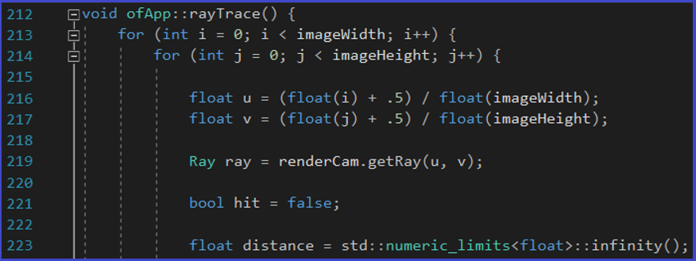
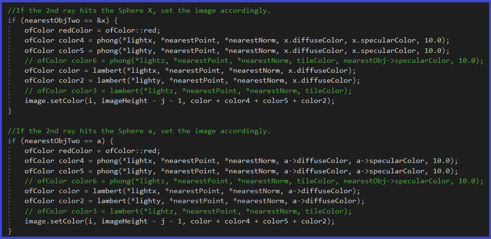

Text Mapping Project

This project builds and modifies two prior projects: raytracing and spotlights. There are a few concepts, such as ray tracing, initializing and pushing spheres and lights, etc., that I won't explain here. If you would like to take a look at those concepts, please check out those two projects:
In a previous project, the raytracer function would send a ray from the camera into the scene, either hitting any object such as a plane or spheres, or simply going to infinity. Anything out of the path of the rays shot by the camera, would simply not appear in the final rendered image. If the rays went to infinity, the color black would take the pixel. I would fix the particular pixels of each rendered image. Sometimes these would be 300 x 200 (for small images), 600 x 400 (for medium sized images), and 800 x 1200 for images in higher quality. The more the quality and size of the image, however, the more the project takes to compile. The project can take as much as 2 hours to compile and iterate through each of the pixels. The pixel sizes (width and height) are defined in the .h file, as the following shows:
I used image.allocate to gather an image during the raytracing process, using the width and height set out in the .h file. Now, the rayTrace function in the RayTrace project, had these first lines:
However, for this project, I added the a line to get the texture image:
I also created a getTexture function, which gets the color of the textured image and returns each pixel's X, Y coordinates. In this case, the name of the image is "texturethree.jpg", and is seamless.
Inside the rayTrace function, we do a few changes. If the camera's ray doesn't hit anything, the pixel color will be black. If the camera hits the plane, then call the getTexture function, pass it the nearest point of that plane, and send it the text (texture of the image). These values will be placed on the "tilecolor" variable. Otherwise, do things the same way as in the first Ray Trace project, by saving the image to a file name called "figurethree.jpg". Here's how that looks like:
Later, we add extra if statements, in case the rays hit a sphere (such as spheres "x" or "a"), then set their color to be that of the tileColor (which contains the textures of the image).
Notice in the previous two images, I also used the phong and lambert functions (created in other projects) to add more detail to the images. The following, are some of the images generated mapping textures either on the floor plane and/or on the spheres, as well as the textures I used to wrap them around. Please note that the resolution of the images may vary slightly, and that is why some of them will be slightly pixelated.